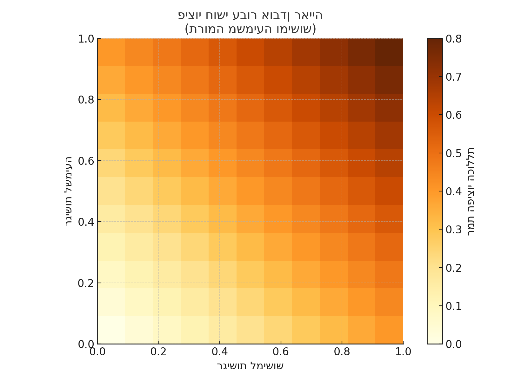

כאשר חוש אחד נפגע או חסר, המוח מפצה על כך באמצעות חיזוק חושים אחרים. יכולת זו משקפת את הגמישות של מערכת העצבים.
P = Σ (ki × Si)
כאשר P היא רמת הפיצוי הכוללת, Si היא עוצמת חוש i, ו-ki הוא מקדם התרומה של אותו חוש.
בדוגמה של עיוורון, שמיעה ומישוש מקבלים משקל של 0.4 כל אחד, ריח וטעם 0.1:
P = 0.4×1 + 0.4×1 + 0.1×1 + 0.1×1 = 1.0
הגרף הבא מציג רמת פיצוי חושי כפונקציה של רגישות לשמיעה ולמישוש:
